AHORA SAT - App móvil - Partes¶
TABLA DE CONTENIDOS
- Pantalla de partes
- Nuevo parte
- Fichajes
- Materiales
- Mano de obra
- Desplazamiento
- Opciones sobre los partes
- Imprimir
- Enviar por correo
- Firmar el parte
- Añadir fotos
- Añadir Documentos
- Cerrar el parte
En el siguiente artículo aprenderás a gestionar y dar de altas los partes de trabajo en la aplicación móvil, además cuentas con un vídeo formativo para aprender de forma rápida a utilizar este proceso.
¶
Pantalla de partes¶
En esta pantalla, veremos todos los partes del sistema; todos, abiertos y finalizados.
Desde el área de búsqueda, se puede escribir el nombre, o parte del nombre, de un cliente o descripción del parte. La aplicación se encargará de hacer una búsqueda dentro de partes conforme vayamos escribiendo.
{kind=link}
Seleccionando cualquiera de los partes podemos acceder a su ficha de visualización.
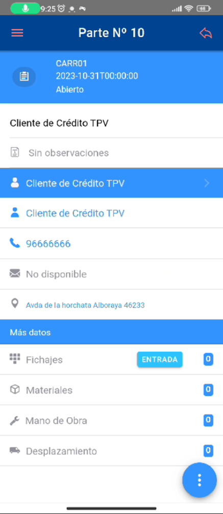 | Desde la ficha del parte podemos:
|
{kind=link}
Nuevo parte¶
Cuando nos encontramos en la lista de partes, pulsando el botón circular con un símbolo +, se pueden añadir nuevos partes.
{kind=link}
La ficha del parte se cumplimenta con los datos requeridos.
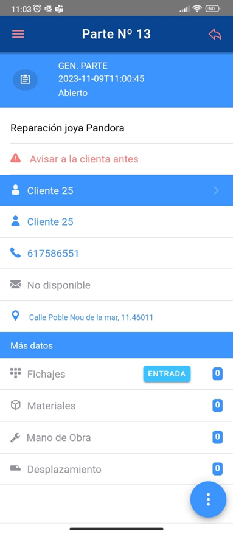 |
|
{kind=link}
Al hacer clic en Guardar, los datos quedarán a la espera de ser enviados en el próximo envío de datos.
Fichajes¶
Podremos ver los Fichajes (partes de mano de obra del usuario actual) automáticos realizados en el parte. Si pulsamos el botón "Entrada " fichará la fecha y hora de nuestro empleado y cambiará el botón a " Salida ".
Al hacer click fichará la hora de salida. Generará Partes de Mano de obra. Si no hay ningún fichaje podremos leer el mensaje ‘No hay registros disponibles’.
{kind=link}
Materiales¶
Podremos ver el material utilizado en el parte, así como añadir más materiales.
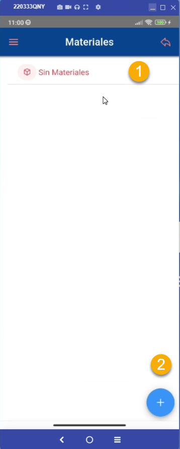 | "Sin materiales". 2.- Para poder añadir registros, haremos clic en el símbolo +, situado en la esquina inferior derecha de la pantalla del dispositivo. |
{kind=link}
Tras hacer click, obtendremos la pantalla de introducción de materiales. Esta pantalla tiene los siguientes campos.
| Artículo: saldrá una lista que nos permite buscar tanto por código como por descripción del artículo. 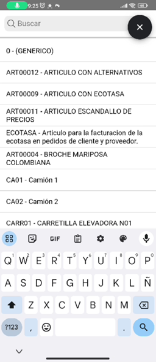 | Fecha: Por defecto es la fecha del día actual, pero se puede seleccionar cualquier fecha pulsando sobre ella. 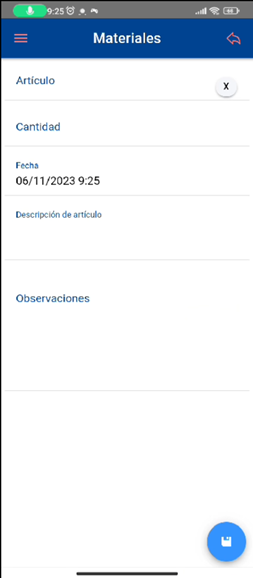 | Cantidad: La cantidad de piezas utilizadas. Se trata de un campo requerido y si no se rellena, la aplicación sacará un mensaje avisando. Observaciones: Se pueden añadir observaciones adicionales. 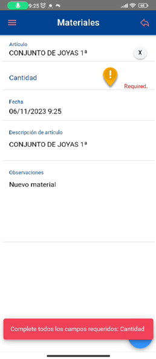 |
{kind=link}
{kind=link}
{kind=link}
Al hacer clic en Guardar, los datos quedarán a la espera de ser enviados en el próximo envío de datos. Para eliminar un registro, debe mantener pulsado el material que desee borrar.
NOTA: Esta funcionalidad afecta únicamente a las líneas que no se han grabado todavía en AHORA 5 ERP.
Mano de obra¶
Podremos ver las imputaciones de mano de obra realizadas en el parte, así como añadir más actuaciones. Si no hay mano de obra indicada, podremos leer el mensaje ‘No hay registros disponibles’.
Para poder añadir registros, haremos clic en el símbolo +, situado en la esquina inferior derecha de la pantalla de su dispositivo. Tras hacer clic, obtendremos la pantalla de introducción de mano de obra:
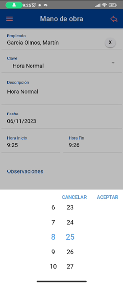 | Técnico: se podrá seleccionar el técnico que ha iniciado sesión en el dispositivo móvil o cualquiera de los técnicos dados de alta en el equipo de trabajo del parte. Fecha: por defecto, la fecha actual, pero se puede modificar. Hora de inicio y hora de fin: La hora a la que se ha empezado y acabado la actividad. Clave: se seleccionará de una lista. Es el tipo de mano de obra que se ha realizado. Descripción: texto libre para especificar detalles sobre la actividad. |
{kind=link}
Al hacer clic en Guardar, los datos quedarán a la espera de ser enviados en el próximo envío de datos. Para eliminar un registro de mano de obra, debe mantener pulsado la línea que desee borrar.
NOTA: Esta funcionalidad afecta únicamente a las líneas que no se han grabado todavía en AHORA 5 ERP.
Desplazamiento¶
Podremos ver las imputaciones de desplazamiento realizadas en el parte, así como añadir más desplazamientos.
Si no hay ningún desplazamiento indicado, podremos leer el mensaje ‘No hay registros disponibles’.
Para poder añadir registros, haremos clic en el símbolo +, situado en la esquina inferior derecha de la pantalla de su dispositivo. Tras hacer clic, obtendremos la siguiente pantalla para la introducción de desplazamientos:
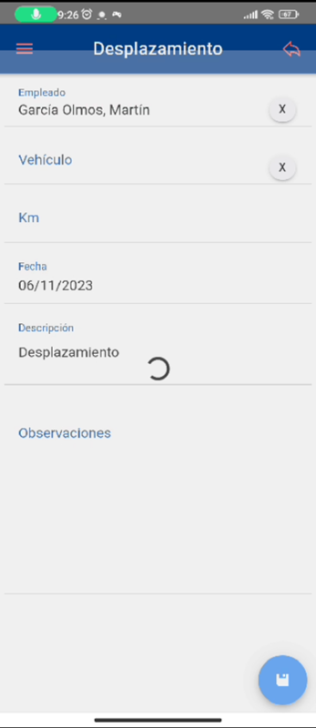 | Empleado: permite seleccionar el técnico que ha iniciado sesión en el dispositivo móvil o cualquiera de los técnicos dados de alta en el equipo de trabajo del parte. Vehículo: se podrá seleccionar de los vehículos dados de alta en el sistema. Kms: se indican los kilómetros realizados en el desplazamiento. Fecha: Fecha del desplazamiento Descripción: descripción adicional. Observaciones: si queremos añadir alguna observación. |
{kind=link}
Al hacer clic en Guardar, los datos quedarán a la espera de ser enviados en el próximo envío de datos.
Para eliminar un registro, debe mantener pulsado el desplazamiento que desee
Cabe resaltar que esta funcionalidad afecta únicamente a las líneas que no se han grabado todavía en el ERP.
Opciones sobre los partes¶
Cada Parte permite acceder e introducir una serie de opciones.
El botón circular con los tres puntos en vertical (imagen izquierda) nos permite acceder a otras opciones adicionales al parte (imagen derecha) como son: Imprimir, enviar, firmar, documentos (ver o adjuntar documentos), cargar o realizar imágenes para adjuntar al parte y finalizar el mismo.
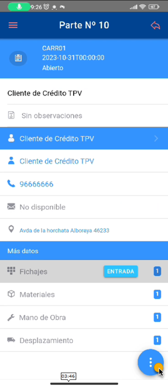 | 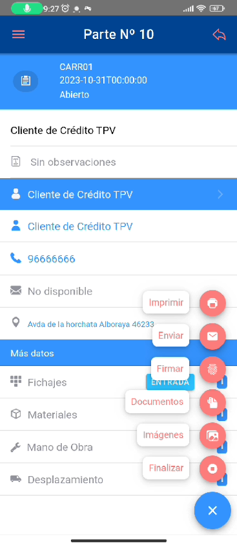 |
{kind=link}
{kind=link}
Imprimir¶
Podremos visualizar una plantilla de impresión del parte desde la que podremos enviarlo como HTML en el cuerpo de un e-mail o generar/imprimir el parte en pdf.
{kind=link}
Enviar por correo¶
En el botón de "Enviar por Mail " nos abrirá los distintos proveedores de mail para que nos abra una ventana de nuevo e-mail. Adjuntará el mismo fichero que la opción de imprimir.
{kind=link}
IMPORTANTE : Es necesario imprimirlo previamente ya que en caso contrario nos indicará u error como que no existe el formato HTML necesario para su envío.
Firmar el parte¶
Existe la posibilidad de añadir una firma al parte. Además, la firma del pate recoge la geolocalización para poder contratar donde se firmó el parte.
Para que esto funcione es importante que la aplicación tenga permisos para acceder a su posición.
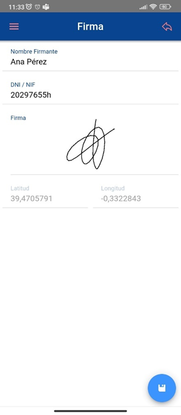 | Nombre: Se rellenará con el nombre de la persona que firme. DNI: Se rellenará con el DNI de la persona que firme. Firma: Al pulsar sobre este campo, se habilitará una zona para firmar. Para ello se puede usar un lápiz especial para pantallas táctiles o el propio dedo. Esta funcionalidad permite borrar la firma para repetirla, cancelar para no firmar o aceptar para guardar la firma realizada. Latitud: Se carga de forma automática. Longitud: Se carga de forma automática.
|
{kind=link}
Añadir fotos¶
Es posible ver las fotos añadidas en el parte, así como añadir fotos nuevas. Dichas imágenes se harán con la cámara del dispositivo móvil.
Las opciones de este proceso son:
- Añadir imágenes desde la galería
- Hacer una foto con la cámara
- Realizar varias fotos seguidas desde la cámara
Para que esto funcione es importante que la aplicación tenga permisos para acceder a sus carpetas y a la cámara del móvil
La primera vez que se vaya a utilizar la cámara del dispositivo, será necesario darle permisos aceptando el mensaje que aparece en la pantalla del dispositivo móvil o tableta. 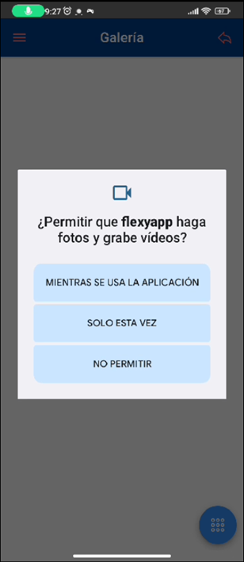
{kind=link}
Si no se ha realizado ninguna foto desde la última sincronización, podremos leer el mensaje "Sin resultados" (1).
Para realizar una fotografía, pulsaremos sobre el icono circular de la parte inferior (2) y se activará la cámara del dispositivo (3) , por último, se quedará guardada en Galería y después será accesible desde documentos, podremos añadir más o finalizar este proceso (4).
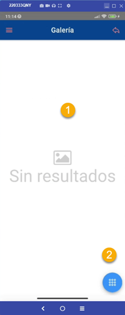 | 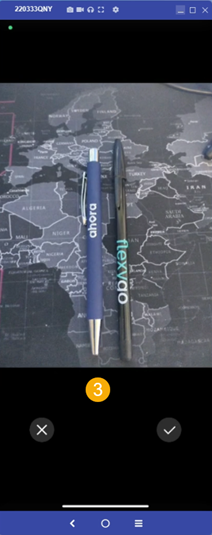 | 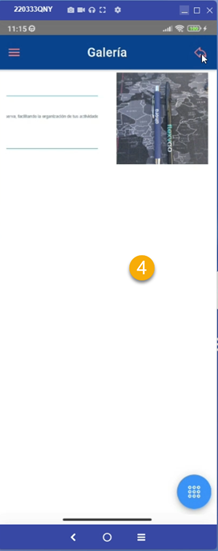 |
{kind=link}
{kind=link}
{kind=link}
Cabe destacar que las imágenes sincronizadas y subidas no se traerán de vuelta a la aplicación, para evitar sobrecargar la actualización.
Añadir Documentos¶
Podremos ver los documentos añadidos al parte, así como añadir documentos nuevos.
El funcionamiento es similar al de las imágenes.
Al acceder a documentos se pueden ver los documentos si los hay, así como las imágenes adjuntas no sincronizadas.
{kind=link}
Cerrar el parte¶
Una vez finalizada la visita y firmado el parte, se procederá a finalizarlo.
Para ello, bastará con pulsar en el botón de Finalizar, situado en la parte inferior de la ventana de partes.
Al hacer clic en este botón se cerrará el parte actual y ya no se podrá modificar salvo que lo volvamos a abrir.
{kind=link}
Una vez cerrado se dejarán de ver ciertas acciones como el acceso a documentos, las opciones que se visualizan una vez finalizado son: imprimir, enviar y abrir de nuevo el parte.
{kind=link}